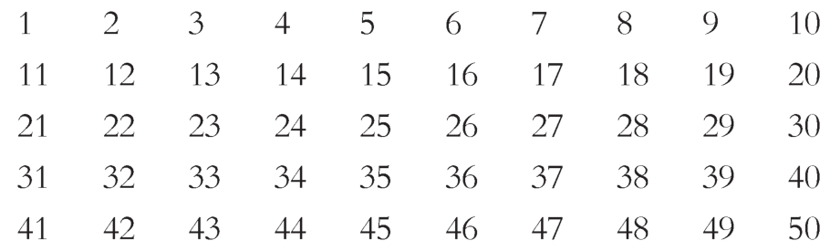
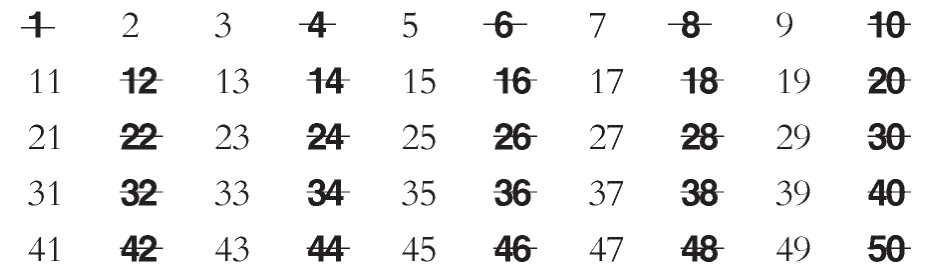
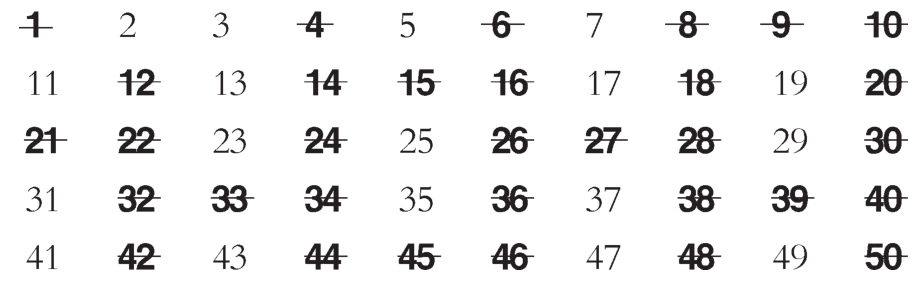
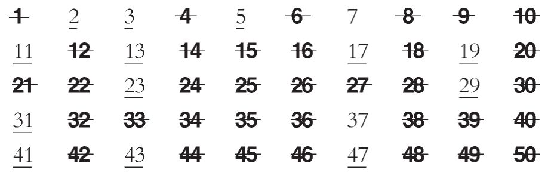
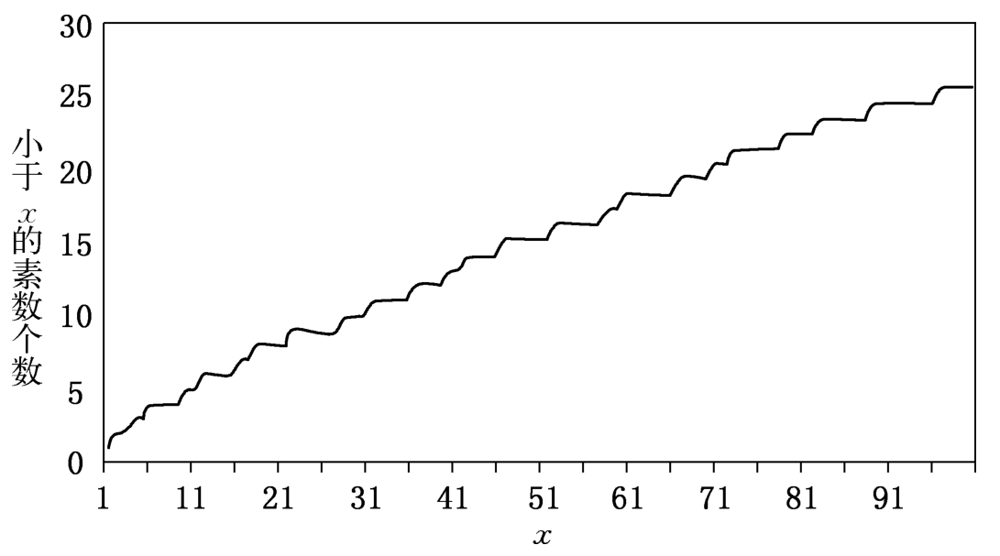
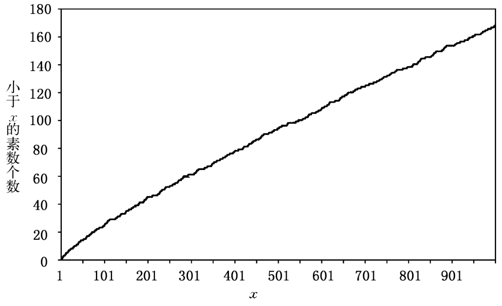
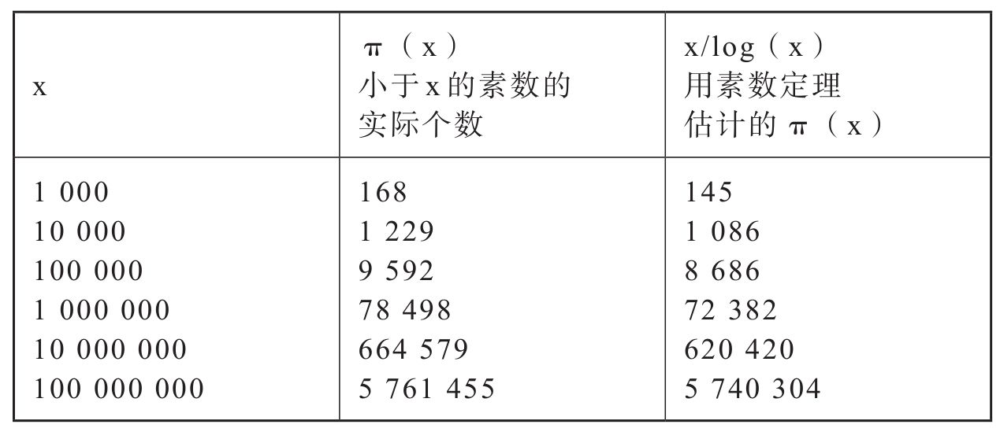

战争开始后的一些年里，爱多士的论文涉及的学科在不断地增加。他认识卡茨时，对概率论了解甚少。但几年之后，他就变成了这个领域中的一个领袖专家。他撰写了组合数学、图论、几何与插值法方面的论文。插值法是关于用少数函数值来估计函数的学问。但爱多士的大部分论文仍献给了他的第一爱好——数学皇后数论。
当爱多士只有10岁时，他的父亲就曾将两相邻素数间的距离可以任意大这一事实证明给他看，爱多士对素数分布的无规则性感到惊讶。素数看来几乎是随机分布的，就像一片片绿洲分布在广大的复合数的沙漠中一样。它们不遵循任何已知的公式。寻找新素数是一件要用穷举查勘法来进行的艰苦工作，最好用国际电脑网络来完成。同时，如果个别素数可以被忽略，则素数总体服从一个简单而完美的定律，即所谓素数定理。
素数定理的证明在19世纪最后的几年里已告完成。这是数学的最高成就之一。在他还是一个年轻学生时，爱多士就学习了这一定理，但他并不觉得这个经典的证明十分令人满意。这一证明非常难懂，这本身并不构成问题。更严重的是这不是一个“初等”证明。对数学家而言，所谓“初等”与证明的难度无关，初等证明是指仅用经典数论及整数与实数的性质所做的证明。已知的素数定理证明都依赖于诸如连续函数及复数这样的概念。这些概念很难直观地与整数的性质相关联。爱多士甚至在少年时代就已感到难以接受这样的事实：写进天书的素数定理的证明竟然不能依赖于那些整数性质。待他长大后，爱多士告诉他的朋友说，他梦想有一天能给出很多人认为不可能做到的素数定理的一个真正初等证明。1948年，爱多士给出了这本天书中的初等证明，实现了他少年时的野心。这是他一生中最辉煌的成就之一，给他带来了荣誉与名声。同时，这一证明也使爱多士陷入了一生中唯一的一次论战旋涡。
编制出第一张素数表的人是厄拉多塞（Eratosthenes），他生活在公元前3世纪的希腊。不同于一个数一个数进行的烦琐检验，他发现了一个快捷地筛去大批数的聪明办法，即所谓的厄拉多塞筛法。例如你要构造一张不超过50的素数表。首先写出前50个整数如下：

由定义，1不是素数，所以划掉1，2是一个素数，将它留下来。表中其他2的倍数都不是素数，所以都划掉：

上表中，2以后第一个未被划去者为3，它必定是一个素数。保存它而将表中其他3的倍数都划掉：

如此反复，再下一个首先未被划去者为5，所以它是一个素数。保存它而划去其他5的倍数。你可以连续采用这一做法，直至达到的数已超过表中整数个数的平方根。对于我们的例子，表中共50个数，由于50的平方根大于7，而小于8，所以将7留下，而将7的其他倍数去掉即可终止。这样做的理由在于任何一个复合数一定是两个或以上的素数之积。在这些素因数中不能有两个大于该复合数的平方根，否则这两个素数之积就大于该复合数了。例如100不能有两个素因数皆大于100的平方根10，这是由于两个任意大于10的数之积必定大于100。所以除1之外，任何复合数至少有一个素因数不超过表中整数个数的平方根。当你按上述做法将不超过表中整数个数的平方根的素数倍数都划去后，就已经划去了表中所有的复合数。下面就是前50个数经厄拉多塞筛法筛选后的最后结果：

在厄拉多塞之后，编造素数表几乎成为对数学皇后虔诚奉献的一项活动了。1776年，费尔克尔（Antonio Felkel）为了流芳百世而编纂了2 000 000以内所有复合数的素因数表。该表的第一卷发表了，它包含了小于408 000的所有整数的因数，但在印刷方面却不像作者所期望的那样成功。除了少数的几卷，费尔克尔的大部分工作成果在以后的土耳其战争中都被用作制造弹药筒了。维也纳帝国财政部曾资助费尔克尔第一卷手稿的印行而未成功，又似乎并非出于善意地扣留了其余未出版的书稿。但这并未阻止费尔克尔重新计算了被没收的部分并将先前的结果扩大至2 856 000。
波兰数学家库利克（Yakov Kulik）肯定是最英勇同时也是最悲壮的素数迷了。本着人人都应有一个嗜好的理论，库利克花费了20年的业余时间编纂了一张1亿数字内所有整数的素因数表。库利克去世后，他毕生工作的遗稿交给了维也纳皇家科学院图书馆保存，共八卷4 212页，其中除第二卷（从12 642 000到22 825 800）已遗失外，其余各卷今天尚能见到。虽然书稿的丢失对个人来说是一个悲剧，但从数学上看却并不重要。第一卷经检查后发现了太多的错误，致使库利克的努力变得没有价值。
当高斯还是一个15岁的孩子时，他检查了一张兰伯特（Johann Lambert）编制的102 000以内的素数表，以便观察素数的规律。数学经常被说成是纯推理的最高表现，但高斯却强调它同时也是一门眼睛的科学。这就是说，数学来自对数字、形状与结构的性质的缜密观察。数学家花费了大量时间来观察和探寻规则性与奇异性，并以此为基础建立起他们的猜想与证明。印度数学家拉马努詹花费了大量时间来进行算术计算以使其理论更充实，更具有启发性。他的传记作者卡尼格尔写道：“他与数建立了密切的关系，出于同样的理由，画家们不停地调配着各种颜料，音乐家们反复试验着不同的音阶。”
年轻的高斯决心要摆脱素数表面的混沌，去看看他是否能找出较大范围的规律。就像一个画家离开他的画架去评估一下自己手头的工作一样。高斯将自然数分成每1 000个数构成的区间，再利用兰伯特编的素数表来计算每个区间中的素数个数。这一技巧还真管用，人们见到在一定的区间以后，素数的分布显得有规律起来了。请看看显示不超过x的素数个数——数学家们称其为函数π（x）——的两张图。第一张图比较密集地考察了从1至100的整数，第二张则比较粗疏，表示1 000之内的数的情况。
函数π（x）的第一张齿形图，远看时是相当光滑的。利用兰伯特的表上搜集到的数据，高斯得以猜出一个用来描述素数分布的异常简单与精确的定律。高斯的公式精确地刻画了素数稀疏出现的缓慢性与必然性。在100以内的正整数中，素数占25%。在1 000以内的正整数中，素数约占17%。在前100万个正整数中，素数仅占了8%。这一百分比在继续缓慢地与必然地下降着，在不超过10 000亿的正整数中素数的比例已降为4%。最后这个数当然不是库利克的某个狂热继承者一辈子工作的成果，而是运用一个非常有效的计算素数的程序在高速电脑上算出来的。

图8-1 素数分布（100以内）

图8-2 素数分布（1 000以内）
高斯猜想所谓的对数函数可以用来描述素数出现缓慢下降的百分比。对数是指数增长的反函数：1 000是10的三次方（103），所以1 000以10为底的对数为3；由于24 =16，所以以2为底的16的对数为4。用来测度地震强度的里氏（Richter）级就是用对数度量的；里氏5级地震的强度为里氏4级地震的10倍。
高斯猜想x以内的素数个数可以粗略地用公式
π（x）≈x/log（x）
来估算，其中log（x）是数学家们喜欢的自然对数的记号，它对应的底为e，略等于2.718（大多数人在中学里都学过，以10为底的对数约等于自然对数的0.434 3倍）。高斯的同时代数学家勒让德（Adrian-Marie Legendre）也独立地猜出了这一定律。经过快速比较，就可以看出这一公式很好地刻画了素数的实际行为。

图8-3
高斯在他一生中，只要有可能，就会去检验他所观测到的这条定律。他有时从最新的素数表中寻找数据，但更经常地则是依赖他惊人的计算能力。1849年，高斯向天文学家恩克（Johann Franz Encke）说起他年轻时关于素数分布的研究：“我经常利用我闲下来的一刻钟去研究某1 000个数的区间里的数（因为我缺乏耐心去系统地研究所有的区间）；最后我终于完全放弃了这种研究，没能完成头100万个数的检验。”这种业余时间的零散研究使高斯能够告诉恩克：“兰伯特的表格里，在101 000与102 000间的1 000个数中有很糟糕的错误；我去掉了7个数，它们不是素数，另外又加进了2个被漏掉的素数。”
对他关于给定数以内的素数个数的猜想公式，高斯并未给出证明。在很多年后仍无人能给出证明。1852年，俄国数学家切比雪夫首先在素数定理的证明方面获得了一些进展，素数定理是人们对高斯猜想的称呼。切比雪夫定理是他关于贝特朗假设证明的延拓，而爱多士19岁时第一项创造性工作也正是贝特朗假设的证明。让我们回想一下，切比雪夫定理可以用下面的史诗式（至少在精神上，如果不是从诗体学意义上来说）对句来概括：
切比雪夫说过的，我再说一遍，
在n与2n之间恒有一个素数！
换言之，任何数与它的倍数之间必定有一个素数。切比雪夫定理给出了素数分布的一个线索。事实上切比雪夫还可以得到比贝特朗假设更多的东西，但他却未能证明素数定理。切比雪夫的一个同时代人也未能证明素数定理，因而宣称：“我们或许要等待这样一个人降临于世，他的洞察力与智慧较切比雪夫更胜一筹，正像切比雪夫在这些方面远超凡人一样。”
高斯最有名的学生黎曼在素数定理的证明方面迈出了重要的一步。在授予黎曼博士学位时，高斯称赞了他“无比丰富的创造性”。在他短暂的一生中——他仅活到40岁——黎曼证明了他是名副其实的高斯继承人。他发展了今天所称的黎曼积分，探索了弯曲空间的几何学，后者成为爱因斯坦引力理论的一个要素。在1859年的一篇文章里，黎曼证明了本质上属于算术问题的素数计数问题可以用检验所谓黎曼ζ函数（Zeta function）的性质来处理。这是直觉的光辉飞跃，但为了处理这件事，黎曼从其他领域中引进了一些概念，而这些领域在过去认为是与数论无关的。黎曼的ζ函数不是一个初等概念。爱多士相信在素数定理的证明中用到它并不是必要的，且会使关于素数分布的基本推理变得模糊不清。为了理解爱多士这一信念的理由，需要对黎曼独特的创造进行仔细的考察。
黎曼ζ函数是被数学家称之为复变函数的最著名例子之一。函数就像一架数学机器，将一个数当成一个输入物输入并咀嚼后，就会输出另一个数。像黎曼ζ函数这样的函数，其输入与输出的数都是所谓的复数，复数含有两部分，其中之一为熟知的实数，另一部分则是所谓的虚数。
实际上，所有数都是复数。我们会送给真正的爱人5个金戒指，但却不会送“5”这个数。爱多士完全有理由为自己能在童年时就发现负数而感到骄傲；毕竟，说一次孵出了负3只鹅是什么意思呢？希腊人是不相信负数的，对于他们来说，方程
x+3=0
是无解的。几百年之后，人们才接受了负数是有意义的，当人们求解方程
x2+1=0
时，就类似地产生了虚数。换言之，什么数的平方等于-1？一个正数乘一个正数为正数，所以不是正数。一个负数乘一个负数仍为一个正数，所以也不是负数。那么既不是正数也不是负数，它是什么呢？这才勉强地承认需要一类新的数。可能主要出于感情而不是存在主义的理由，这一类新的数被称为虚数。随着虚数及复数——它是实数与虚数之和——被加进数系，上述的方程就可以求解了。大量优美而有用的数学随之产生。当今复数已被最现实的工程师熟练地用来设计从电话到吊桥的每一样东西。
除了在数学其他领域的广泛应用外，令人惊奇的是复数也渗入了整数的领域。黎曼证明了对ζ函数性质的全面了解将导出素数分布的结果，它比任何已知的结果更强。黎曼的文章给出了关于ζ函数的6个猜想，它们所显示的对复数域的深刻观察力至今仍使数学家们惊叹不已。黎曼猜想中的5个已被证明了，但最后一个仍未得到证明，它已成为数学中最重要的未证明问题了。
希尔伯特将这一猜想列为数学中最重要的问题之一。有一次，他曾说，如果他睡了1 000年醒来后，他将要问的第一个问题就是：“黎曼猜想解决了吗？”希尔伯特的传记作者里德（Constance Reid）重述了这一轶事，虽说真伪不明，或许可以表明希尔伯特对黎曼猜想着迷之深。希尔伯特有一个学生，带了一个黎曼猜想的证明去找他。希尔伯特为他的努力深受感动，但经仔细检查后，发现了一个致命的错误。在这个学生去世后不久，他的朋友要求希尔伯特为他致悼词。希尔伯特开始讲些一般事情，表示对失去这样一个年轻有为的学生深表遗憾。他提到这个学生尝试的黎曼猜想证明虽存在缺陷，却有可能在某一天导致这一著名问题的解决。面对已故学生的茔墓，淋着雨，希尔伯特兴致勃勃地说道：“说实在的，让我们来考虑一个复变数的函数……”
哈代尽管未能解决黎曼猜想，但对这一猜想的解决做出了重大的贡献。他甚至别出心裁地用黎曼猜想来与上帝开玩笑。哈代担心海上航行的安全，因此每当访问他在丹麦的数学之交哈拉尔德·玻尔（Harald Bohr，著名物理学家尼尔斯·玻尔的弟弟）并即将登船横渡北海回国之前，作为一种旅行保险，他总要写一张明信片给玻尔，宣称他已证明了黎曼猜想。里德说，哈代深信“上帝是不会让哈代——他们之间在进行一场个人战争——带着这样的荣誉而死去的”。
为了证明素数定理，数学家们几乎花了40多年时间来掌握这个棘手的ζ函数，1896年阿达马（Jacques Hadamard）与瓦莱·普桑（Charles Jean Gustave Nicolas de la Vallée Poussin）终于证明了高斯年轻时提出的敏锐猜想——素数定理，以后的数学家则致力于改进阿达马与普桑的困难的证明及阐明黎曼ζ函数的性质，虽然黎曼猜想仍悬而未决。但始终没有找到素数定理的一个初等证明，很多数学家都认为这样的证明是不可能的。“关于理论的逻辑，我们有某些成见，”哈代写道，“我们认为有些定理，如我们所说的那样‘很深刻’，而另一些则比较肤浅。如果有人能给出素数定理一个初等证明，他就会知道这些看法是错误的；这一课题并不像是我们所预料的那样结合在一起的，而现在是抛弃旧有的著作和重写理论的时刻了。”
爱多士及其他一些数学家把哈代说的话更多地看作挑战而不是警示。1931年爱多士给予切比雪夫定理卓越的证明后，他宣称他将致力于初等方法，并将为此奋斗终生。在许多数学家看来，爱多士掌握的初等方法已用尽了，但他却继续发表出可以留在“天书”中的、意想不到的美丽结果与证明。他的许多定理是关于素数分布的，但他寻找素数定理初等证明的目标却依然很渺茫。
在第二次世界大战期间，欧洲的数学家们无法跟他们的美国同行通信。当战事结束后，那些可以旅行的人便前往欧洲，去看看他们的同行在干些什么。图兰是战争浩劫的幸存者，并留在了布达佩斯。他被高等研究所邀请去那里访问6个月。爱多士为能与他的老朋友重逢而欣喜若狂，他从锡拉丘兹大学——他正在那里当客座教授——到纽约来会晤刚刚抵达的图兰。此后的6个月间，爱多士经常到研究所访问图兰并在一起研究多项式根的分布，他们在这方面的论文至今仍不断被人引用。
战后，研究所的一位教授魏尔(1)去欧洲做调研性的长途旅行。他得知有一个年轻的挪威数学家塞尔伯格（Alte Selberg）在一家不出名的挪威杂志上发表了一些漂亮的解析数论论文。魏尔一定感到自己像是一个棒球教练，发现了一名能在乡村沙地上投出每小时1英里快球的棒球手一样。他很快与塞尔伯格签了约，并将他这位新徒弟带回新泽西州的普林斯顿，让他在一个大舞台上去表演较量。
塞尔伯格没有使魏尔失望，在研究数学的风格上，塞尔伯格与爱多士迥然不同。他是一个文静的人，甚至有些孤僻，很少与他人合写论文。与爱多士一样，他也是一个善于用初等方法去攻克数论难题的高手。1948年5月，塞尔伯格写了一篇论文，其中给出了狄利克雷(2)定理的一个初等证明，狄利克雷定理仅次于素数定理，是对初等方法威力的巨大挑战。狄利克雷定理涉及算术数列中素数出现的情况。算术数列是指等差整数列，例如3，5，7，9，11，……在这一数列中，3，5，7与11都是素数。1837年，狄利克雷证明了任何一个算术数列，只要其各项没有一个公因子，则它必定含有无穷多个素数。因此算术数列17，22，27，32，……中含有无穷多个素数，而5，10，15，20，……中则不可能有无穷多个素数，这是由于这一数列中每个数都是5的倍数。
塞尔伯格认识并喜欢图兰，他将自己关于狄利克雷定理的证明告诉了图兰。塞尔伯格计划7月份到加拿大去旅行，图兰知道，当塞尔伯格返回时，他自己大概已经离开普林斯顿了，所以他要求看看塞尔伯格的手稿。塞尔伯格后来在给魏尔的信中写道：“我不仅同意这样做，而且对图兰感到很留恋。我花了几天的时间将证明详细告诉了他。”塞尔伯格还抛出了一件小小的礼品，给图兰看了一眼他3月份刚发现的一个意味深长的方程，即现在所称的“塞尔伯格公式”。塞尔伯格写道：“我没有告诉他这个公式的证明，也未告诉他这一公式的可能推论及我在这方面的想法。”
塞尔伯格踌躇未定且没有告诉图兰的一个事实是：他的基本公式可能是得到素数定理的一个初等证明的关键。不难证明塞尔伯格公式是素数定理的推论，当然这公式并不是这样被发现的，塞尔伯格完全是用初等方法推导出他的公式的。由于基本公式能够由素数定理导出，塞尔伯格认为很可能反之亦然，即从基本公式可能导出素数定理的一个初等证明。关于这一点，塞尔伯格对图兰只字未提，他离开了研究所9天。
在塞尔伯格离开期间，图兰在研究所举行了一次关于狄利克雷定理证明的非正式小型研讨会，他的听众包括爱多士、乔拉（Saravadam Chowla）及后来成为爱因斯坦助手的斯特劳斯（Ernst Straus）。乔拉与斯特劳斯后来都是爱多士的合作者。斯特劳斯写道：“在演讲结束后，接着有一段简短的讨论，内容是关于塞尔伯格不等式（即基本公式）的意想不到的力量。”爱多士立刻看出塞尔伯格公式可能暗含着素数定理，他感到第一步要证明一条中间定理，而直觉告诉他这定理将是塞尔伯格公式的推论。粗略地讲，这条中间定理即是，当素数增大时，两相邻素数之比趋于1，这使他接近于证明素数定理的最终目标。如同往常一样，他一头栽进了工作。
当塞尔伯格回到研究所后，听说图兰举办了一次关于狄利克雷定理工作的研讨会，他感到很吃惊，但并没有表现出不高兴。“对这样做我当然没有表示反对，因为从我这方面来说，这仅涉及已完成的部分工作，尽管它们尚未发表。与此相关的是，图兰至少已将基本公式告诉了爱多士，我同样也没有表示反对，因为我事先并未要求图兰对此保密。”
塞尔伯格可能是意识到他无权反对图兰的做法，但他对爱多士如此热情地抓住他的研究结果感到不悦。对于爱多士来说，数学的目的——也即生命的目的——就在于证明与猜想，并且要尽可能快地去证明与猜想。一条数学定理，一旦被发现了，就成为每一个人的财富。爱多士认为自己有责任去探寻这些定理的推论，而无论它们会将你引向何方。他传奇式的合作岁月仍摆在他的前面，但即便如此，在1948年以前，他发表的133篇论文中就有52篇是与他人合作的。很多数学家对爱多士这种研究数学的活跃的社会化方式很欣赏。但同时也有像塞尔伯格这样的一些数学家，他们宁愿按自己的步调孤军奋战；对于他们来说，爱多士进攻性的数学研究方式可能是粗鲁的和野心勃勃的，或者至少是出格的。
在塞尔伯格从加拿大回来后不久的一个星期四下午，爱多士在研究所富尔德楼外碰到了塞尔伯格。爱多士告诉了塞尔伯格他想要证明的中间定理。在这次偶遇后不久，塞尔伯格写信给魏尔说：“我开始关注爱多士在这些事情上的工作了。”塞尔伯格试图给爱多士泼冷水，他对爱多士说他怀疑基本公式能否导出爱多士想要证明的中间定理，且很可能无法导出素数定理的初等证明。塞尔伯格甚至告诉爱多士说，他已构造出一个反例，一个破坏性的数学等式。但是，正如塞尔伯格后来承认的，他所设想的反例是一种有意的误导；塞尔伯格没有告诉爱多士某些基本假设，这些假设将消除反例的破坏性效果。塞尔伯格在将近50年后的一封信中解释道：“这一欲将爱多士引入歧途的做法（显然没有成功）在当时的情绪下多少是可以理解的。”
第二天，爱多士告诉塞尔伯格他已证明了中间定理，塞尔伯格的怀疑于是变得没有根据。事实上，爱多士证明了一条比他的定理稍强的结果，这就更严重地妨碍了塞尔伯格自己来证明素数定理——而他已告诉过爱多士，他相信这样一个证明是不可能的。塞尔伯格急忙赶回家去拼力一搏，并在星期日利用爱多士的定理完成了素数定理的证明。爱多士非常高兴，并设想他与塞尔伯格可以联名发表一篇关于他们的成功合作的论文了。或许塞尔伯格最终会允许爱多士跟他商讨联名发表文章的事。但在这一切发生之前，塞尔伯格对锡拉丘兹大学做了一次短暂的访问，在那里他听到一些谣传，这些谣传彻底打消了他与爱多士分享荣誉的意向，甚至排除了与爱多士讨论数学的可能性。
正如爱多士每当获悉有趣的数学消息后通常所做的那样，在他与塞尔伯格发现素数定理的初等证明后，爱多士立刻向他分布广泛的通信者寄发明信片，告知这一消息。塞尔伯格这时只给他兄弟中的一个人写了信。当他对锡拉丘兹的夏季访问快结束时，塞尔伯格因得知这一消息已传播甚广而感到吃惊。在锡拉丘兹，有一位教授天真地告诉塞尔伯格：爱多士已找到了素数定理的一个初等证明，按塞尔伯格的说法，他所碰到的每一个人都将这个证明“完全地或至少是实质上”归功于爱多士。根据斯特劳斯后来变得众所周知的回忆，这一偶然事件甚至变得更使塞尔伯格感到丢脸。按照斯特劳斯的说法，有一个教授气喘吁吁地跑来向塞尔伯格询问道：“爱多士和某个斯堪的那维亚数学家搞出来了，这个大好消息你听说了没有？”
在1987年《大西洋月刊》刊登的一篇关于爱多士的文章里，霍夫曼（Paul Hoffman）又提到了斯特劳斯所述的故事。霍夫曼接着说塞尔伯格被谣传深深地激怒了，他立刻坐下来，匆匆写出一篇证明的单独文章，爱多士的功绩被一笔勾销。塞尔伯格确实是受到了伤害，但他从来就没有跟爱多士合写论文的热情；他在锡拉丘兹的经历已足以使他确信分开写论文的明智。塞尔伯格给爱多士写了一封简短的信，信中说：“我不能接受一篇合作论文的任何协议。”此时，塞尔伯格已发现了由他的基本方程去证明素数定理的另一途径，这一方法不需要依赖爱多士的贡献，他告诉爱多士，他将单独发表这一证明，并将“在序言里给出第一个证明简单的概述”，其中他会对爱多士的结果表示感谢。塞尔伯格然后说，爱多士可以写一篇自己的文章，详细论述他所得到的公式，但不应提及素数定理。爱多士见信后怒不可遏。
爱多士立即写信给塞尔伯格，提醒他，当他们谈到用塞尔伯格的基本公式去证明素数定理时，“你对成功是非常怀疑的，事实上，你说过你相信可以证明，基本引理［即爱多士从图兰那里得知的塞尔伯格的基本公式］不能推出素数定理……如果你能够告诉我［你所知道的一切］，我肯定当场就会完成素数定理的证明”。塞尔伯格的迷魂阵当时并未能使爱多士泄气，而现在却成了逆火。人们不可能来评判，如果没有爱多士开路，塞尔伯格是否一定能找到素数定理的证明。但有一点是清楚的，即爱多士将塞尔伯格的误导当了真，他确实以为他在解决一个已被塞尔伯格否定了的问题中起到了关键作用。
“我完全不同意仅发表［中间结果］的想法，”爱多士继续写道，“并如以前一样强烈地感到我完全有权在一篇合作论文上署名。”当他意识到，他已不可能指望塞尔伯格同意发表合作论文时，爱多士建议发表一篇他自己的文章，公布“我们的简化证明，当然给你应享有的全部荣誉［指出通过我的某些想法与定理，你首先得到了素数定理］”。为了防止对各人贡献的无意曲解，爱多士写道：“当然，我将乐于首先将这篇文章寄给魏尔，如果他愿意劳驾一阅以证明我对你是真正公正的。”
数学家们最后同意塞尔伯格将其论文投给有威望的《数学纪事》（Annals of Mathematics），而爱多士的文章则投到《美国数学会通报》（Bulletin of the American Mathematical Society）上。使人吃惊的是爱多士的文章被《通报》拒绝了，可能是由于魏尔的意见起了作用。
魏尔在1948年2月给论文审稿人的一封信中写道：“我提出异议，爱多士是否有权发表公认是塞尔伯格的东西……我确实认为爱多士的行为是不讲理的。如果我是责任编辑，我就绝不怕拒绝他这种形式的文章。”当爱多士得知文章被拒绝之后，他立即将其改投《全国科学院学报》（Proceedings of the National Academy of Sciences），并被接受发表了。
50多年来，关于素数定理初等证明的争端一直是数学界的传闻和猜测的一个热点。直到爱多士去世以后，有关的档案才得以公开供人查阅。它们揭示的是这样的故事，其中既无英雄，亦无败寇。实际上，这个故事突出地反映了数学研究方式的重大转变。
20世纪以前，数学的合作可以说是凤毛麟角，那个时代的重大结果绝大部分都只与一个人的名字有关。而今天，联名的定理已不足为奇。同样的倾向在所有的科学领域都能看到，这可能是由于科学界规模的急剧膨胀——过去的绝大多数科学家至今还活着——以及交通与通讯的日益便利。不管是什么原因，总还有一些科学家宁愿单干，保持着他们的想法直到完善圆满为止。有些科学家的大脑永远是敞开的，而另一些科学家则总是紧闭着。为了保证能独自证明费马大定理，怀尔斯一个人关在他的顶楼里工作了7年，即使是对最亲密的同事，他也未透露自己在干什么。这或许是他从爱多士与塞尔伯格的故事中吸取了教训。
数学家们所下的赌注也将使他们把关于优先权的战斗继续进行下去。“数学的荣誉，”哈代写道，“如果你愿意为它付账，那将是一种最可靠、最稳固的投资。”数学真理是永恒的，超越文化的。毕达哥拉斯与欧几里得的一些定理在今天仍然与他们被创造出来时同样地新鲜与受到关注。“当埃斯库罗斯(3)被人们遗忘时，阿基米德会依然被铭记，”哈代写道，“这是因为语言会失去生命力，而数学思想却能够永葆青春。”正如爱多士喜欢说的那样，数学是流芳百世最可靠的途径。对于爱多士来说，与人分享的流芳百世仍然是流芳百世。归根到底，全部数学都是合作的成果，因为按牛顿的话来说，所有数学家都是站在巨人的肩膀上。（曾与爱多士一起工作过的卢森特技术学院的一位数学家温克勒尔［Paul Winkler］喜欢诠释牛顿的语言，他把这句话改说成：“如果我能够看得远一些，这是由于我站在匈牙利人的肩膀上。”）
1950年，由于素数定理的初等证明及著名的塞尔伯格筛法的发展，塞尔伯格获得了诺贝尔奖的数学版菲尔兹奖（Fields Medal）。菲尔兹奖每隔4年颁发一次，最多4个数学家被授奖。爱多士赞成这一做法：“只要（每4年）都有2个或最多4个菲尔兹奖章，就不会有人真正感到生气，即使他自己没有获奖，只要是优秀的数学家得到了它就行。”1952年，由于素数定理的证明，爱多士获得了与菲尔兹奖荣誉相近的柯尔奖（Cole Prize）。
虽然从未公开说起过，但爱多士在与塞尔伯格的冲突中却感到受了伤害。爱多士总是毫不犹豫地乐于与别人分享发现的荣誉，并且常常将自己的贡献降到最低限度。但一家匈牙利杂志上登载的他与老朋友奥尔帕尔的长篇访谈清楚地表露了爱多士的感情：“在1948—1949年，我最重要的贡献是给出了素数定理的初等证明……同时，一个挪威裔美国居民塞尔伯格也获得了类似结果。”在40年后的这次追述中，塞尔伯格的作用变成了一个脚注。即使在今天，这个证明在匈牙利仍被称为爱多士-塞尔伯格证明，而在普林斯顿则叫作塞尔伯格-爱多士证明。
素数定理初等证明只是一颗昨夜星辰，现在它本身已差不多成为一个脚注了。这个证明很美，但并没有产生如哈代所预料的革命性效果。没有哪本书因此要被抛弃，也没有一种理论因此而需要重写。尽管黎曼的ζ函数与素数定理之间有着密切的联系，但初等证明并未能阐明黎曼猜想的神秘。“回顾一下，这并非数学中如此重要的作品，”作为同是爱多士与塞尔伯格亲密朋友的内桑森说道，“一些匈牙利人到处说塞尔伯格不应该获得这个菲尔兹奖……而爱多士才应该得到它。这种说法显然是无聊的废话。这对塞尔伯格与爱多士都是不公平的，因为除了素数定理的初等证明，他们两人在其他方面都做了非常重要的工作，他们中的任何一个都可以轻易地摘取菲尔兹奖的桂冠。”
素数定理的初等证明是爱多士童年梦想的实现，同时也是他一生中最痛苦的插曲的起因。据朋友们回忆，爱多士有时感叹道，塞尔伯格的偶然事件永远剥夺了他在研究所中的一个位子，塞尔伯格将在那里度过一生的其余时光，而他却在全世界流浪了40年，既没有职位，也没有家庭。这肯定是夸张的说法，但多少也反映了一些事实。1948年，爱多士抑郁地离开了美国，这是10年来的第一次。他还会回来的，但不会在任何国家再度过这么长的时间了。
(1)魏尔（Hermann Weyl，1885—1955），德国数学家，因纳粹迫害，移居美国，任普林斯顿高等研究所研究员，美国科学院院士。——译者
(2)狄利克雷（P. G. L. Dirichlert，1805—1859），德国数学家，柏林大学、格廷根大学教授，解析数论的创始人。——译者
(3)埃斯库罗斯（Aeschylus），古希腊悲剧作家，有“悲剧之父”之称。——译者